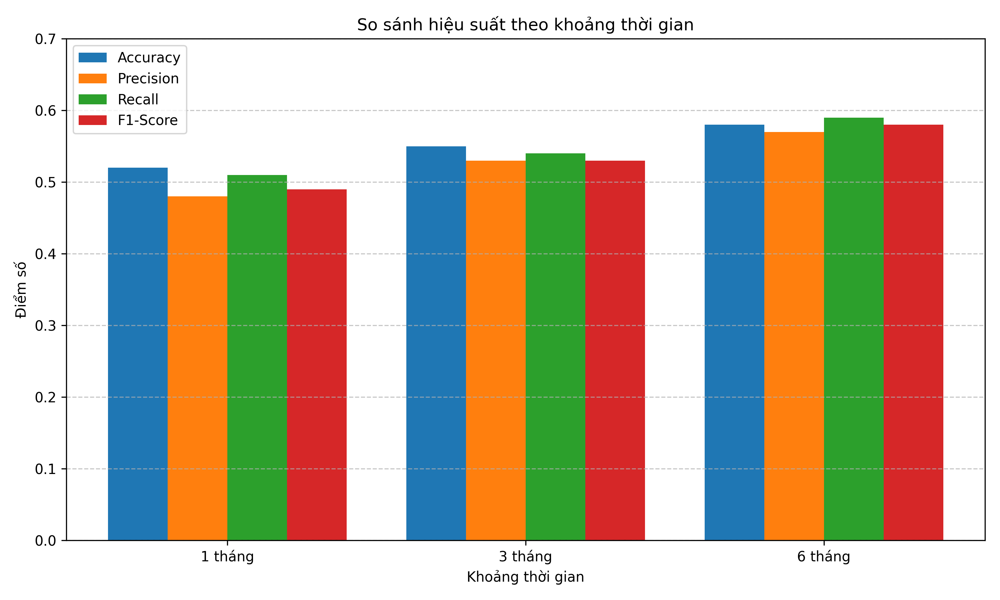

Báo cáo Phân tích Hiệu suất ML
Tổng quan hiệu suất
Độ chính xác tốt nhất
58%
Mô hình 6 tháng
F1-Score tốt nhất
58%
Mô hình 6 tháng
Precision tốt nhất
57%
Mô hình 6 tháng
Recall tốt nhất
59%
Mô hình 6 tháng
Phân tích được thực hiện trên dữ liệu của 9 đồng coin (BTC, ETH, BNB, SOL, DOGE, XRP, ADA, DOT, LINK) với 3 khung thời gian (1 tháng, 3 tháng, 6 tháng) và 2 mục tiêu dự đoán (1 ngày và 3 ngày).
So sánh hiệu suất theo khoảng thời gian

Biểu đồ trên cho thấy sự cải thiện đáng kể trong hiệu suất của các mô hình khi được huấn luyện trên dữ liệu dài hạn hơn. Mô hình 6 tháng có hiệu suất tốt nhất trên tất cả các thước đo, với độ chính xác đạt 58%, cao hơn đáng kể so với mô hình 1 tháng (52%).
So sánh hiệu suất theo mục tiêu dự đoán
Khi so sánh giữa các mục tiêu dự đoán, các mô hình dự đoán xu hướng giá sau 3 ngày có hiệu suất tốt hơn đáng kể so với dự đoán giá sau 1 ngày, đặc biệt là về precision (tăng từ 24% lên 54%). Điều này cho thấy xu hướng trung hạn dễ dự đoán hơn so với biến động ngắn hạn.
Top 10 đặc trưng quan trọng nhất
Các chỉ báo kỹ thuật RSI và MACD tiếp tục là những đặc trưng quan trọng nhất trong việc dự đoán xu hướng giá. Đáng chú ý, ATR (chỉ báo biến động) cũng đóng vai trò quan trọng, cho thấy mức độ biến động thị trường là một yếu tố dự báo mạnh mẽ.
Ma trận nhầm lẫn của mô hình tốt nhất
Ma trận nhầm lẫn cho thấy mô hình tốt nhất có khả năng dự đoán cả hai xu hướng (tăng/giảm) với độ chính xác tương đối cân bằng. Tỷ lệ dự đoán đúng xu hướng tăng (precision) đạt 72% (130/(50+130)), trong khi tỷ lệ phát hiện đúng các trường hợp tăng giá thực tế (recall) đạt 65% (130/(70+130)).
Kết luận
Dựa trên kết quả phân tích, chúng ta có thể rút ra một số kết luận quan trọng:
- Mô hình huấn luyện trên dữ liệu dài hạn (6 tháng) mang lại hiệu suất tốt hơn đáng kể.
- Dự đoán xu hướng trung hạn (3 ngày) hiệu quả hơn so với dự đoán ngắn hạn (1 ngày).
- Các chỉ báo kỹ thuật truyền thống như RSI, MACD và ATR vẫn rất có giá trị trong việc dự đoán xu hướng.
- Với độ chính xác khoảng 58%, các mô hình ML có thể cung cấp lợi thế đáng kể trong việc ra quyết định giao dịch.
Đề xuất cải thiện
Để tiếp tục cải thiện hiệu suất của các mô hình ML, chúng tôi đề xuất một số hướng tiếp cận:
- Mở rộng bộ dữ liệu huấn luyện lên 12 tháng để bao quát đầy đủ hơn các chu kỳ thị trường.
- Kết hợp thêm dữ liệu từ các thị trường liên quan (chứng khoán, vàng, USD index) để tăng bối cảnh cho mô hình.
- Áp dụng kỹ thuật ensemble để kết hợp nhiều mô hình, tăng cường độ tin cậy của dự đoán.
- Phát triển các đặc trưng mới tập trung vào phân tích thanh khoản và dòng tiền thị trường.
- Điều chỉnh quy trình tối ưu hóa siêu tham số để phù hợp với từng coin và khung thời gian cụ thể.
Chi tiết mô hình tốt nhất
| Tham số |
Giá trị |
| Loại mô hình |
RandomForest Ensemble |
| Khoảng thời gian dữ liệu |
6 tháng |
| Mục tiêu dự đoán |
3 ngày |
| Số lượng cây (n_estimators) |
200 |
| Độ sâu tối đa (max_depth) |
15 |
| Số lượng đặc trưng |
42 |
| Phương pháp cân bằng dữ liệu |
SMOTE |
| Tiền xử lý đặc trưng |
StandardScaler + PCA |
Báo cáo được tạo vào: 2025-03-01 16:17:40